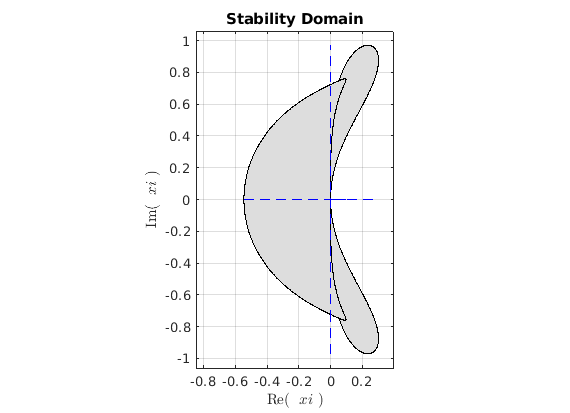

clear all;
close all;
LW = 'LineWidth' ;
lw = 1;
clr = [221 221 221]/255;
xlbl = 'Re( $\ xi$ )';
ylbl = 'Im( $\ xi$ )';
intrptr = 'Interpreter';
ltx = 'Latex';
N = 1000;
th = linspace(0,2*pi,N);
w = exp(1i*th);
f=@(w) 3*w.*((w.^2)-1)./(7*(w.^2)-2*w+1);
g=@(w) 12*(w.^3 - w.^2)./(23*w.^2 - 16*w + 5);
xi = f(w);
plot(xi, 'k-', LW,lw), hold on
fill (real(xi), imag(xi), clr)
plot([min(real(xi)) max(real(xi))],[0 0],'b--',LW,lw)
plot([0 0], [min(imag(xi)) max(imag(xi))],'b--',LW,lw)
xlabel(xlbl,intrptr, ltx), ylabel(ylbl, intrptr,ltx)
xlim([min(real(xi))-0.3 max(real(xi))+0.3])
ylim([min(imag(xi))-0.3 max(imag(xi))+0.3])
xii = g(w);
plot(xii, 'k-', LW,lw), hold on
fill (real(xii), imag(xii), clr)
plot([min(real(xii)) max(real(xii))],[0 0],'b--',LW,lw)
plot([0 0], [min(imag(xii)) max(imag(xii))],'b--',LW,lw)
xlabel(xlbl,intrptr, ltx), ylabel(ylbl, intrptr,ltx)
xlim([min(real(xii))-0.3 max(real(xii))+0.3])
ylim([min(imag(xii))-0.3 max(imag(xii))+0.3])
title('Stability Domain')
grid on
daspect([1 1 1]), hold off
xii = 0.2 + 0.8*1i;
xio = 0.2 - 0.4*1i;
coeffii = [1 -7/3*xii (-1+2/3*xii) -xii/3];
coeffio = [1 -7/3*xio (-1+2/3*xio) -xio/3];
ep1=abs(roots(coeffii))
ep2=abs(roots(coeffio))
xiiA = 0.2 + 0.2*1i;
xioA = -0.4 - 0.6*1i;
coeffiiA = [12 (-1-23)*xiiA (16*xiiA) -5*xiiA];
coeffioA = [12 (-1-23)*xioA (16*xioA) -5*xioA];
ep1A=abs(roots(coeffiiA))
ep2A=abs(roots(coeffioA))
xis = 0.09534 + 0.7597*1i;
xio = 0.2 - 0.4*1i;
coeffiis = [1 -7/3*xis (-1+2/3*xis) -xis/3];
coeffio = [1 -7/3*xio (-1+2/3*xio) -xio/3];
ep1s=abs(roots(coeffiis))
ep2s=abs(roots(coeffio))
fprintf('Compare and Contrast\n')
fprintf('Most of the region of the stability domain for AB3 lines in the negative real part of x and both in the negative and \n positive imaginary part of x, while for the other LMS method, the satbility domain lies in the positive real part of x and also both in the positive and negative \n imaginery part of x. However these two have a region in common.\n')
fprintf('Would you ever want to use this method?\n');
fprintf('I would never want to use this method because checking for root condition at the point\n inside to and outside to the apparent domain, at least one root has a modulus greater\n than one, hence the method is unconditionally unstable for all episilon, inside and\n outside the domain.\n');
ep1 =
1.1710
1.1915
0.1970
ep2 =
1.2252
0.8707
0.1397
ep1A =
0.7233
0.4436
0.3673
ep2A =
1.8750
0.4071
0.3936
ep1s =
1.3172
1.0454
0.1853
ep2s =
1.2252
0.8707
0.1397
Compare and Contrast
Most of the region of the stability domain for AB3 lines in the negative real part of x and both in the negative and
positive imaginary part of x, while for the other LMS method, the satbility domain lies in the positive real part of x and also both in the positive and negative
imaginery part of x. However these two have a region in common.
Would you ever want to use this method?
I would never want to use this method because checking for root condition at the point
inside to and outside to the apparent domain, at least one root has a modulus greater
than one, hence the method is unconditionally unstable for all episilon, inside and
outside the domain.
